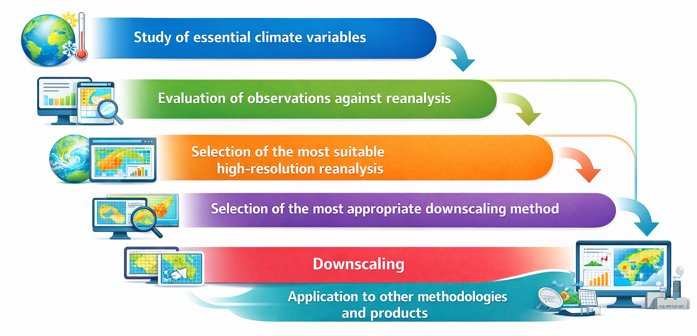
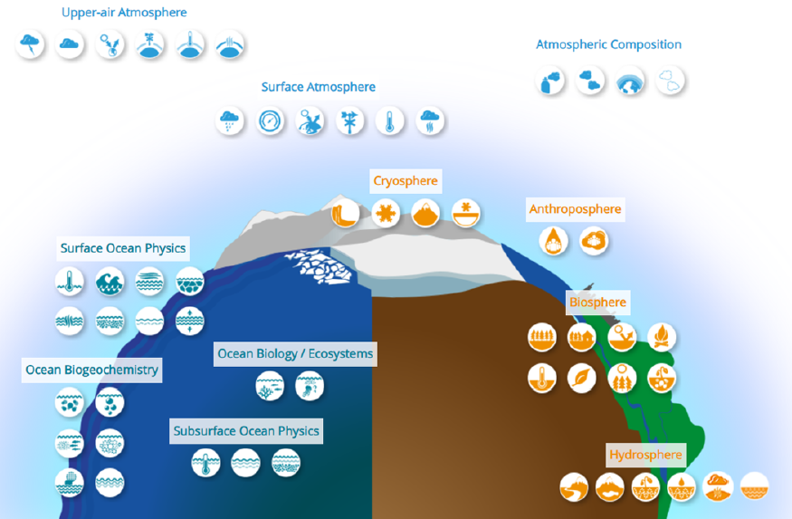

METHODOLOGY
The main objective of this work is to perform a statistical downscaling of as many climate variables as possible for available climate change scenarios outputs and for the Iberian Peninsula.
Statistical downscaling is a technique that allows obtaining climate information with high spatial resolution from the outputs of global climate models, which typically have very low spatial resolution, by establishing statistical relationships between large-scale model variables and local observations. However, when applying this type of methodology, a large number of problems arise, especially with available meteorological observations, whose time series are often very incomplete for the least studied variables. Because of this, most downscaling products have been developed for variables with a greater number of available observations, such as temperature or precipitation, creating a gap in the literature regarding information for variables such as wind or humidity. When beginning a downscaling project of this nature, it is essential to determine which databases are available to the user, whether they have sufficient temporal coverage to guarantee a sound climatological study of the variables, and whether all variables are adequately covered. If not, other climate products can be used for downscaling, such as a reanalysis that closely resembles the available observations and has a sufficiently high resolution to provide detailed data for these variables. Furthermore, a large number of statistical downscaling methods exist; in this work, the significant potential of novel deep learning methods such as DeepESD has been considered.

The methodology of this work has been divided into the following sections:
Study of essential climate variables. Essential climate variables are a set of variables defined by the Global Climate Observing System (GCOS) that are considered fundamental for describing the Earth's climate system because (1) they are relevant for climate characterization, (2) they can be measured with enough precision, and (3) they can be observed continuously on a global scale. The GCOS considers more than 50 essential climate variables. In this study, we have considered (1) the need to study a limited number of them, due to time and manpower constraints, (2) the need for these variables to still be sufficient for a minimal description of the climate system, and (3) the interest in variables for which information is very limited due to the challenges of meteorological observation. Therefore, five variables have been chosen: air temperature and solar radiation provide the minimum possible information about the Earth's energy balance; wind provides the minimum possible information about atmospheric dynamics; and precipitation and air humidity describe the minimum possible information about the hydrological cycle. More information about these variables can be found in the Data section.

Evaluation of observations against reanalysis. Of these five variables, wind speed, relative humidity, and short-wave radiation have significantly less complete observational time series than temperature and precipitation. Therefore, downscaling based solely on observations would be inadequate. It was decided to perform the downscaling using the very high-resolution reanalysis that most closely resembles and best matches the available observations. To this end, an evaluation of several high-resolution climate reanalysis datasets was conducted. For more information, see the Evaluation section.
Selection of the most suitable high-resolution reanalysis. Following the evaluation, the reanalysis that yielded the best results against observations was selected. For the Iberian Peninsula during the considered time period and for the variables of interest, the results returned that CERRA is the reanalysis most similar to AEMET network meteorological observations, and therefore the dataset with which the downscaling will be performed. For more information, see the Evaluation section.
Selection of the most appropriate downscaling method. In this work, a large number of methods were considered (RAW-BIL, QDM, MLR, XGB, DeepESD). Although downscaling was performed for all of them, more attention was paid to DeepESD, a method that yielded the best results and was of greater interest due to its novelty as a deep learning methodology, still under development, for which little information is yet available. For more information, see the Downscaling section.
Downscaling. Finally, statistical downscaling for the five variables was carried out using different methods and based on a climate ensemble of global models and the high-resolution CERRA reanalysis. This yielded a large number of indices of interest for the historical period and for the SSP5-8.5 emissions scenario, chosen because it provides the strongest climate change signal and therefore the clearest comparison for a first approximation. For more information, see the Downscaling section.
Application to other methodologies and products. Additionally, a preliminary study has been conducted on applying this downscaling method to other fields of study, such as seasonal forecasting, reservoir projections, and crop modeling. Other results obtained during the course of this work that may also be of interest have been included. For more information, please see the Further Applications section.